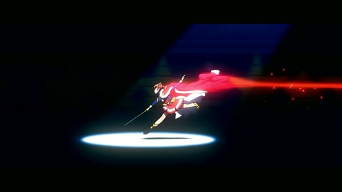

← 案例图谱AI47 / 主要视觉研究样本
Seedance2.0官方先导片
2xLabs · 3913播放快照 · <10万 · B站原作 ↗
星空漂浮、舞厅、卡通群岛、玩偶舞台形成不同媒介段落；服装与双人关系作为锚点，场景丰富度不能仅归功剪辑转场。
 约59.800秒 · 案例代表帧
约59.800秒 · 案例代表帧从画面里找依据
这一例先看什么
星空漂浮、舞厅、卡通群岛、玩偶舞台形成不同媒介段落；服装与双人关系作为锚点，场景丰富度不能仅归功剪辑转场。
审美判断
暗场小字与写实人脸保持单一焦点，粒子年份亮于星空，黄色衣服在写实/卡通段贯穿，帮助跨风格识别人物。
迁移到自己的题材
人物短片、剧情提案、广告小故事、关系重组、讽刺、科幻伦理、生活反转。
教学提问：这一镜增加了什么新信息？删掉它，动机、情绪或因果会不会丢失？
带画面的分析单元
图像标出取样时间，对应观察中的关键状态。单帧不能独立证明运动，连续性请结合摘录。表达作用与应用场景是教学解读，复现路线是建议，不是原作者工程还原。
分析单元 01 / 0—15.333秒
暗场渐暗／黑底双语小字／人物近景
实际观察
暗蓝观众与暖台灯逐渐变暗，9秒黑底双语小字，12秒人物近脸与星点背景。
表达作用（教学解读）
让一次画面替换有理由：继续动作、转换观点、给反应，或通过相似形状建立联系。
具体应用场景
动作、对话、运动、情绪混剪、多来源的视觉联系。
复现建议（非原作者工程还原）
曝光/透明度渐暗，黑底文字排版；前景人物接星空需人物遮罩或生成镜头。
直出判断：暗场与文字容易，写实人脸与自然表情需素材
常见误用：只匹配颜色不顾动作阶段；方向突变；每次连接都加过渡掩盖问题。
分析单元 02 / 18—31秒
星空悬浮／粒子年份变形／人物剪影
实际观察
两人星空漂浮，23.7转较宽拥抱构图，24–25.4粒子2016，25.6–26秒数字粒子重排成2026；主体逐渐暗成剪影。
表达作用（教学解读）
用运动方向、尺度和密度建立空气、空间或情绪；装饰层应服务焦点。
具体应用场景
回忆、季节、梦幻、寒冷、散场、能量爆发、文本聚散。
复现建议（非原作者工程还原）
将字形采样为粒子目标，配对插值+扰动和辉光；人物分层/遮罩保留前景，单独降低曝光，星背景缓移。
直出判断：粒子年份/星点/剪影容易到中等；可信人物漂浮拥抱与服装动作需生成素材
常见误用：平均铺满；近远粒子大小与模糊无差别；粒子挡脸；用程序火星冒充纪实拍摄。
分析单元 03 / 33—48秒
舞厅群像／冷暖转场／双人反应／舞台光
实际观察
舞厅多人跳舞、舞台周年标识，之后双人反应近景与暗舞台光束。
表达作用（教学解读）
建立段落、材质和情绪的一致性；颜色变化可以承担信息，而不只是美化。
具体应用场景
多片源混剪、人物立场、回忆/现实区分、冷暖转折、品牌统一。
复现建议（非原作者工程还原）
生成或选取群舞/舞台镜头，保持服装与人物，宽景接反应；舞台光束可噪声体积光或透明渐变。
直出判断：光束与剪接容易，群舞肢体/人脸连续一致难
常见误用：所有镜头同一滤镜；肤色被破坏；饱和度代替焦点；色彩含义前后矛盾。
分析单元 04 / 51—61秒
走廊追逐／画风切换／风格化舞蹈
实际观察
走廊奔跑出门，59.067转风格化城市同向奔跑，59.8转两人转圈近景，60.667转竖琴形建筑远景。
表达作用（教学解读）
通过变化与稳定的比例让信息有轻重。视觉密度来自切镜、版式与局部动画三个层面，不只靠刀数。
具体应用场景
所有形式；尤其高潮前的蓄力、解释段的阅读、回忆段的停留和快慢对照。
复现建议（非原作者工程还原）
剪接以同方向奔跑匹配动作，写实与卡通镜头间硬切；卡通场景/人物需专门生成或建模美术。
直出判断：动作连接与变调色容易，完整画风转换及双人牵手转身难
常见误用：全片等密度；把闪帧当新镜；高切速被当成质量分；没有稳定段供观众理解。
分析单元 05 / 63—75秒
悬浮群岛／宇宙环线／巨叶花园／透视城市
实际观察
群岛、宇宙轨道、两人近景、巨叶花园奔跑，72.667转城市更近景然后拉远。
表达作用（教学解读）
将平面关系变成有前后层次的观看空间；小幅运动可以放大情绪。
具体应用场景
静止画MAD、回忆、图像故事、海报动态化、人物介绍。
复现建议（非原作者工程还原）
用一致角色引用/风格图生成不同场景；简化环线可轨道曲线，群岛视差可分层慢移。
直出判断：几何轨道/慢推容易，丰富环境美术与角色动作连续难
常见误用：所有层同速或反向乱动；人物像纸板；补洞不完整；视角变化超出原画信息。
分析单元 06 / 78—96秒
定格玩偶质感／舞台灯色／手部插入
实际观察
人物呈布偶/黏土式表面和衣料，舞台红蓝光；90秒手与钢琴键特写，93秒面部反应，96秒回写实人物。
表达作用（教学解读）
通过变化与稳定的比例让信息有轻重。视觉密度来自切镜、版式与局部动画三个层面，不只靠刀数。
具体应用场景
所有形式；尤其高潮前的蓄力、解释段的阅读、回忆段的停留和快慢对照。
复现建议（非原作者工程还原）
获取同角色不同媒介风格的生成镜头，用手部细节与反应连接；材质/骨骼和衣料需源视频/3D。
直出判断：光色与剪接容易，完整玩偶材质、弹奏手指和一致表演难
常见误用：全片等密度；把闪帧当新镜；高切速被当成质量分；没有稳定段供观众理解。
分析单元 07 / 99—109.267秒
写实反应／黑底文字／品牌联名尾卡
实际观察
99–102人物近景，105黑底双语小字，108联名与挑战赛尾卡。
表达作用（教学解读）
把阅读顺序变成观看顺序；用字重、位置与停留表达强调、犹豫或压迫。
具体应用场景
观点短片、歌词视觉、人物宣言、章节、情绪高潮；先决定哪些词必须读懂，哪些只是纹理。
复现建议（非原作者工程还原）
干净切接、淡黑、字号层级/联名排版；授权说法仅记录为作者声明。
直出判断：小字与尾卡容易，写实人物表演依赖素材
常见误用：每个字都弹跳、整句停留不足、所有文字同时争主位。严肃叙事里无理由的回弹会削弱重量。
用连续画面核对
保留原研究的多段局部摘录。片段含音轨不代表已听审；本资料不评价音乐卡点或对白节奏。
短时变化怎样理解
23–27秒一次近景转宽拥抱，2016→2026为同构图粒子更新；59–61秒三次画风/景别变化，人物转圈不是独立切镜。
把镜头连接、版式更新、局部图层变化和镜内运动分开记录。所查窗口是下限，不是全片平均或AI／人工排名。
原始逐窗记录 →这次练习的约束
写一句人物欲望，再用“道具—动作—反应”三镜讲清一次转折。静音播放仍要看出信息变化，音频另行制作与核验。
先写“我希望观众明白／感到什么”，再选本页的一种手法。完成无效果基础版后再加层；解释新增层带来的收益和代价。
打开练习与复盘表 →来源、观看范围与制作归属
实际检查范围：实际查看37张3秒概览0–108（3表），71.8–73.733及59–60.933共60密集帧（4表，约15/s）；23–26.9另40帧（3表，实际10/s、标头请求12/s）。109.2675秒1080p30fps，三段4秒摘录；未听审、未连续完整音画观看。
制作线索：2xLabs，第一方3913播放、2026-02-12，作者声明AI合成。简介称即梦Seedance2.0×爱乐之城十周年重映创意挑战赛先导片，明确列监制/创意策划/剪辑/美术/AIGC为2xLabs及声效人员；108秒片尾自称模型制作、素材经合作授权。官方/授权为作品自身声明，未独立核验品牌背书，不等全自动模型创作。
边界：第一方列完整人工团队与AI合成，官方/合作授权为作品自述未独立验证；粒子字、暗场、尾卡可做，写实拥抱、群舞和玩偶弹琴需复杂镜头素材。
播放快照保存时间（UTC）：2026-10-20T10:57:07.589708+00:00。H30制作方式为推定；同源改编、仿作和转载依原记录标注。
原始案例记录 · 选样表把你的判断留下来
笔记仅尝试保存在本机浏览器；浏览器策略可能限制本地文件存储，重要内容请导出。
沿着同一问题继续阅读

H47方向、冲击与节奏
后台机械和舞台场面之间的连接先建立期待，再给动作与反应；预告不只是把最强画面全部提前放出。
主要样本6个分析单元
细节、反应与转折
武侠幻想与真实宠物的反差，依赖落点和回收。水墨、打斗和日常拖鞋的材质变化，应服务反转而不是各自炫技。
主要样本7个分析单元
方向、冲击与节奏
红云异象与冷暗院落对照，半透明人群、莲花与花内建筑形成尺度/隐喻变化，后段信息揭示靠景别顺序。
主要样本7个分析单元